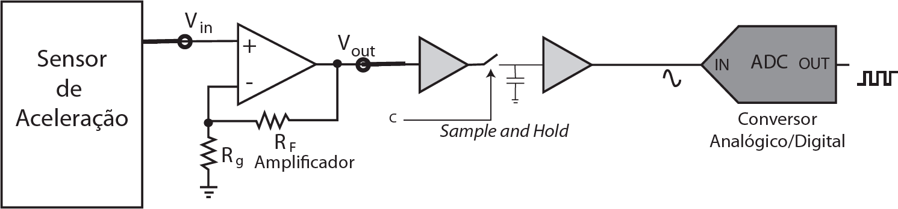

As vibrações em um ônibus em movimento serão analisadas através da medida da aceleração durante períodos de tempo, por meio do sistema de aquisição formado por quatro módulos: um sensor de aceleração, um amplificador, um Sample & Hold e um conversor A/D, conforme esquema a seguir.

O sensor é um acelerômetro que converte linearmente leituras entre -1,0 m/s²e +1,0 m/s² em sinal de tensão
V, entre -800 mV e +800 mvV. Esse sinal passa por um amplificador operacional com ganho de tensão dado por
, em que
. Uma vez amplificado, o sinal V. é submetido a um Sample & Hold, cuja
chave de amostragem pode ser controlada por software através de seu ponto de controle “c”. O conversor
A/D converte linearmente valores entre -2,00 V e + 2,00 V para valores binários que podem, então, ser lidos
por software. Com esse sistema de aquisição, serão feitas coletas de dados de 1000 aquisições a uma taxa de
500 aquisições por segundo, ou seja, cada coleta dura dois segundos.
análise desse sistema de aquisição de dados revela que